ВСЕ ОК - БУДЬ СПОК!
ЖИТТЯ- НЕ ТІЛЬКИ УРОКИ…Є ЩЕ СТІЛЬКИ БАГАТО ЦІКАВОГО!
Новинки кіно
Королівство тварин (2024)
Прем'єра в Україні 2 листопада 2024
Світ охоплює хвиля мутацій, які перетворюють звичайних людей на тварин. Франсуа робить усе, щоб урятувати свою дружину, яка зазнала впливу цього таємничого явища. Поки навколо з’являються все нові істоти, головний герой і його 16-річний син рушають на пошуки, що змінять їхні життя назавжди.
Жанри: драма пригоди фантастика
Країна: Франція


Аркі у країні монстрів (2024)
Прем'єра в Україні 2 листопада 2024
Юна Аркі – найнезвичайніший підліток на планеті. Вона товаришує з фантастичними істотами і постійно винаходить дивовижні пристрої. Але коли її батька викрадає небезпечний вчений, їй доводиться подолати свої страхи та вирушити на його пошуки у загадкове Місто Світла. Все більше розкриваючи таємниці цього місця, Аркі розуміє, що їй доведеться врятувати не лише свого тата, а й увесь світ!
Жанри: детектив мультфільм пригоди фантастика фентезі
Країна: Австралія
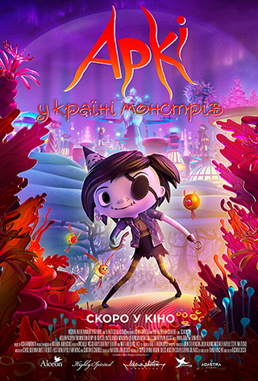 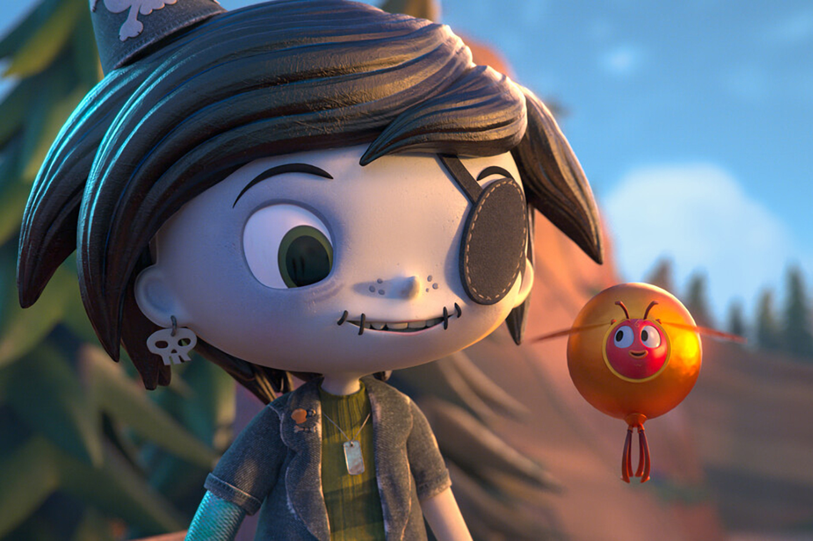Коп на драйві: Порятунок бабусі (2024)
Незграбний поліцейський Раян втрапив у неймовірну ситуацію: його бабусю викрав мексиканський картель. У Раяна та його колег є максимум 3 дні, щоб врятувати її. На них чекають екстремальні пригоди у Парижі, Абу-Дабі та Канкуні та одна місія – порятунок бабусі.
Жанри: комедія пригоди фантастика
Країна: Франція

Марвели (2024)
Прем'єра в Україні 9 листопада 2024
Стрічка «Марвели» від Marvel Studios розказує про Керол Денверс, а.к.а Капітан Марвел. Їй вдалось віднайти себе, перемігши тиранів Крі та помстившись Абсолютному Інтелекту. Але через непередбачувані наслідки Керол доводиться взяти на себе тягар дестабілізованого всесвіту. Одного разу обов’язок кличе її в аномальну червоточину, пов’язану з Крі. Там сили Керол набувають неочікуваного зв’язку із силами її супер-фанатки Камали Хан, відомої як Міз Марвел, і названої племінниці Моніки Рамбо, астронавтки космічної станції Т.Е.С.А.К. Колись близькі, Моніка та Керол останнім часом трохи втратили зв’язок. І ось таке незвичне тріо має об’єднатися та навчитися працювати злагоджено, щоб врятувати всесвіт. А називатимуть їх Марвели.
Жанри: бойовик пригоди фантастика фентезі
Країна: США
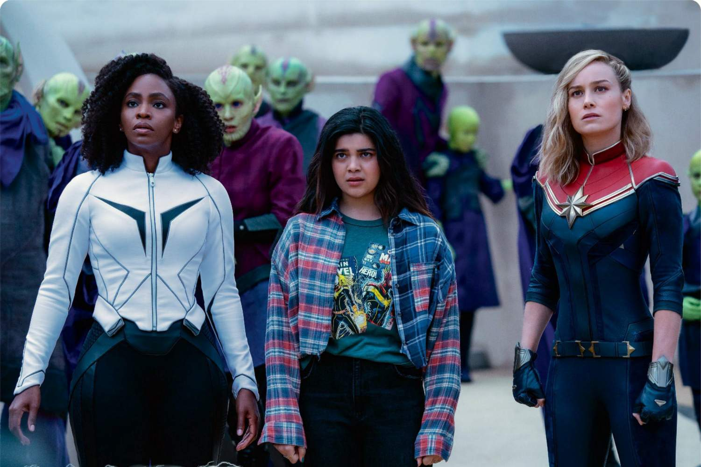Перший код (2024)
Прем'єра в Україні 16 листопада 2024
«Перший код» – це фільм, який вже став найочікуванішим фільмом серед української аудиторії не тільки зі сфери IT, а й серед звичайного глядача. Адже «Перший код» розповідає про реальну боротьбу IT- спеціалістів, які об'єдналися у 300-тисячне віртуальне військо і просто звичайних людей, що за допомогою смартфона змогли протистояти ворогу. «Перший код» – про становлення української галузі ІТ від 50-х років ХХ століття, коли українські інженери працювали над створенням першого комп’ютера, до сьогодення, коли ІТ-сектор став важливою частиною боротьби з росією...
Жанри: драма документальний
Країна: Україна


Прокляття щуролова (2024)
Прем'єра в Україні 16 листопада 2024
Давня легенда про Пегого Дудочника лякала людей протягом століть. Але що, якщо не все в ній вигадка, а містичний мандрівник у строкатому костюмі, який безжально прирікав цілі поселення на смерть, існує? Мел далека від давніх історій: вона звичайний музикант у світі і намагається лише забезпечити свою дочку. Якось їй вдається награти мелодію, здатну вводити людей у транс, але таким даром легендарний Гамельський щуролов ділитися не стане. Тепер давнє зло знову з'явиться на цьому світі, щоб написати нову криваву історію.
Жанри: жахи
Країна: США


Генделик (2024)
Прем'єра в Україні 16 листопада 2024
Одвічне бажання чоловіка кохати справжню та єдину Жінку створює в уяві сценариста Герасимова різні образи. Він зустрічається з жінками своїх мрій – Панночкою, Повією, Аристократкою і… Дружиною. Герасимов перестає розуміти, хто з цих жінок реальність, а хто – лише плід його уяви. У пошуках відповідей він потрапляє до містичного привокзального кафе Генделик. Зустріч з Барменом та «випадковим» Супутником допомагає йому розібратися в собі та стати вільним…
Країна: Україна
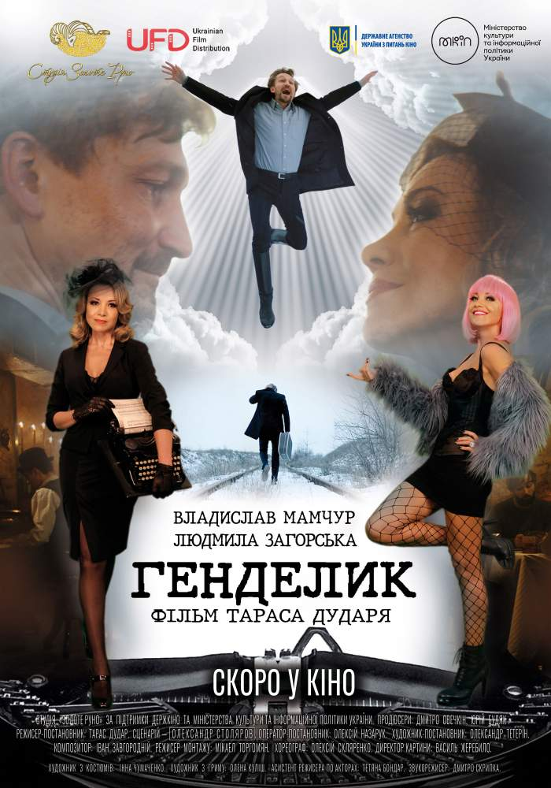 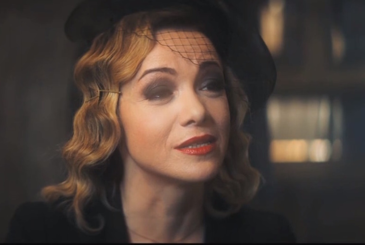Бажання (2024)
Прем'єра в Україні 23 листопада 2024
Історія розповідає про кмітливу дівчину-ідеалістку, яка загадує настільки сильне бажання, що на нього відгукується космічна сила - маленька кулька безмежної енергії. Щоб врятувати свій народ, вони протистоять лихому королю. Адже коли воля однієї сміливої людини поєднується з магією, можуть відбуватися дивовижні речі.
Жанри: мультфільм пригоди комедія фентезі сімейний мюзикл
Країна: США
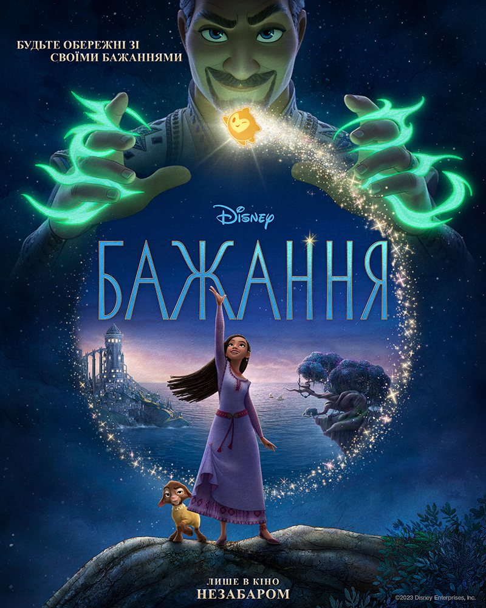
Вонка (2024)
Прем'єра в Україні 14 грудня 2024
Віллі Вонка (Тімоті Шаламе) як ніхто інший знає, наскільки смачним може бути шоколад. Він чимало часу витратив на вивчення усіх тонкощів приготування. Хлопець з радістю відкрив би магазин, однак на заваді йому стоять старі й скупі власники місцевих кондитерських лавок.
Жанри: комедія пригоди сімейний фентезі мюзикл
Країна: США, Канада, Ірландія, Велика Британія, Австралія, Франція
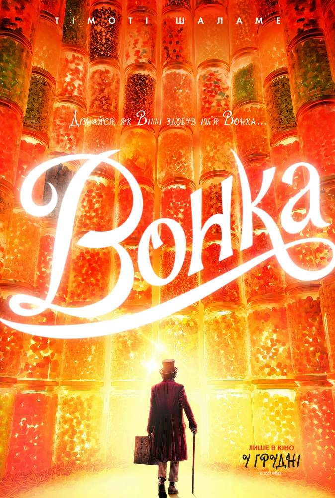 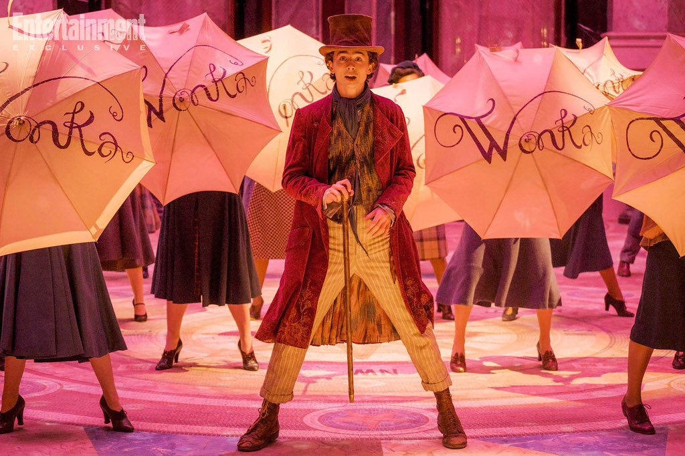Крилата історія (2024)
Прем'єра в Україні 7 грудня 2024
Патрік – зовсім незвичайний метелик. Він розумний і дуже винахідливий. А ще він мріє вирушити в далеку, найзахоплюючу пригоду у своєму житті. Але літати він так і не навчився, бо з самого дитинства в нього лише одне крило. Що ж, доведеться вдатися до хитрощів, сміливих винаходів, а також допомоги вірних та веселих друзів. Він ні перед чим не зупиниться і не залишить своєї мрії — пурхати в небі і, нарешті, побачити світ з висоти польоту.
Жанри: мультфільм
Країна: Канада, Німеччина


Отрута Медузи (2024)
Прем'єра в Україні 14 грудня 2024
Двчата, які живуть у трейлерному парку, вміють берегти свої таємниці. Ці жінки наділені силою, у існування якої мало хто вірить. Після зміїного укусу вони перетворюються на медуз і мають особливий зв'язок зі зміями. Спершу це сприймалося ними як хвороба, згодом тіло почало мутувати, а саму жінку починала мучити невимовна спрага. Новенька серед спільноти, Лола (Бекка Хірані), гідно витримує обряд посвячення. Проходження ритуалу зближує її з подругами, які тепер мають стати їй ближче, ніж рідні сестри. Лола, як і решта тутешніх дівчат, також має силу могутнього звіра, що діє через неї. Однак цього разу істота стала набагато могутнішою.
Жанри: жахи
Країна: Велика Британія


Аквамен і загублене королівство (2024)
Прем'єра в Україні 21 грудня 2024
Сиквел сольних пригод супергероя Артура Каррі, відомого як Аквамен. Він народився від кохання доглядача маяка Томаса та Атланни, королеви підводного царства Атлантида. Від самого народження Аквамен наділений надприродними здібностями – він може керувати приливами, здатний спілкуватися з морськими істотами та плавати з великою швидкістю.
Жанри: бойовик пригоди фентезі фантастика
Країна: США
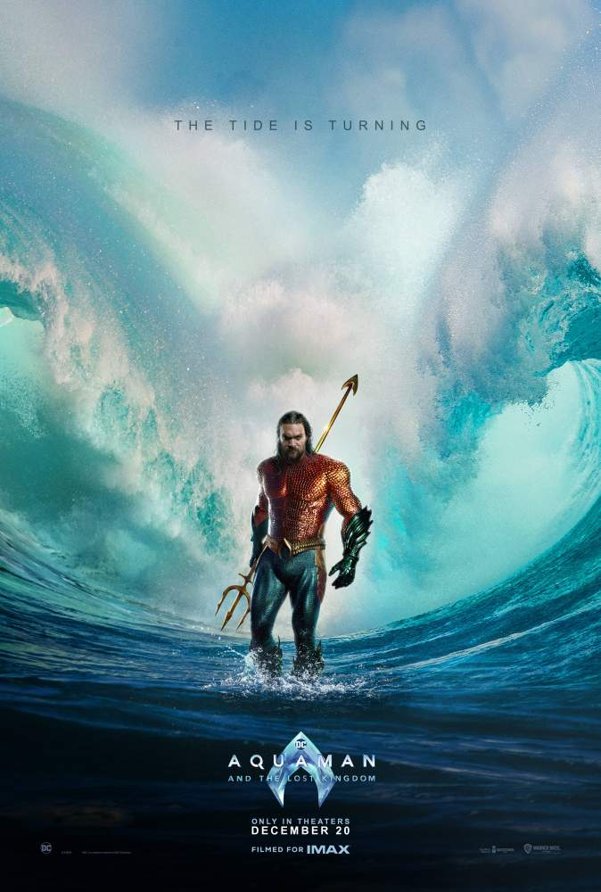 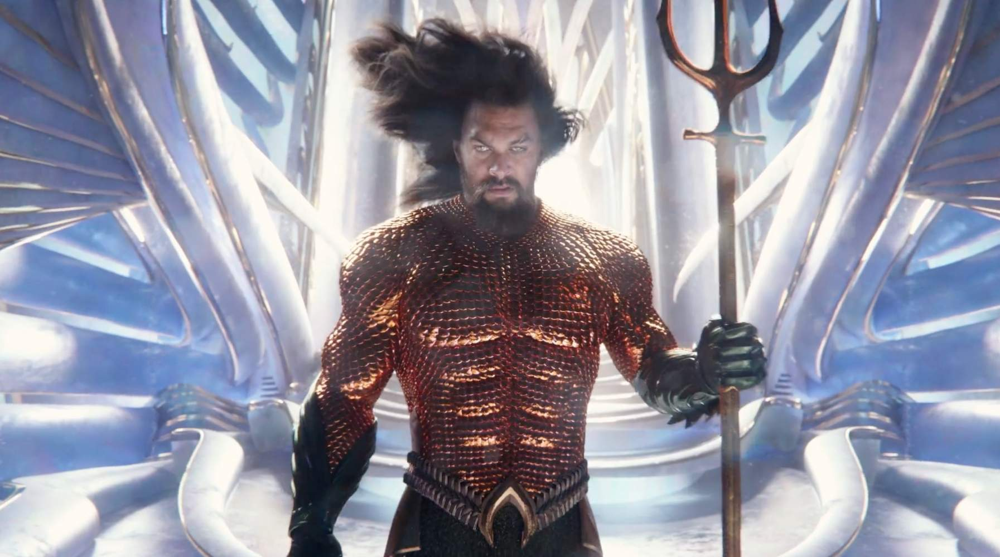Переліт (2024)
Прем'єра в Україні 21 грудня 2024
Цього Різдва вирушайте у яскраву сімейну подорож далеко за межі звичного в оригінальній історії «Переліт»! Пригодницька анімація для всієї родини розповість історію родини диких качок, які вирішують мігрувати, але, обравши неправильний маршрут, опиняються в Нью-Йорку, де їх чекає чимало пригод і випробувань.
Жанри: фентезі пригоди сімейний мультфільм комедія
Країна: США, Франція
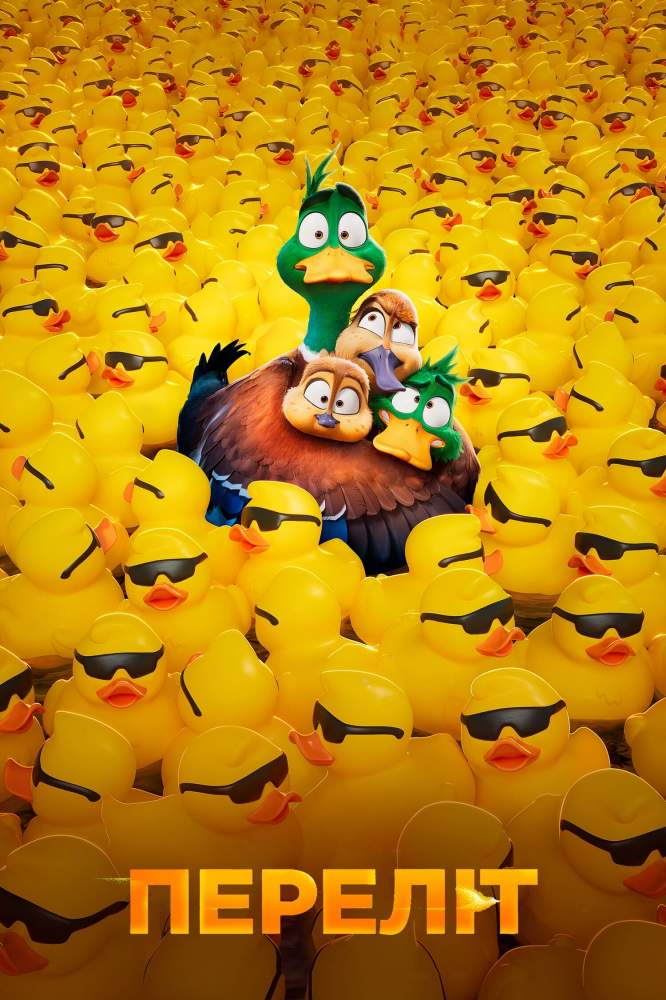 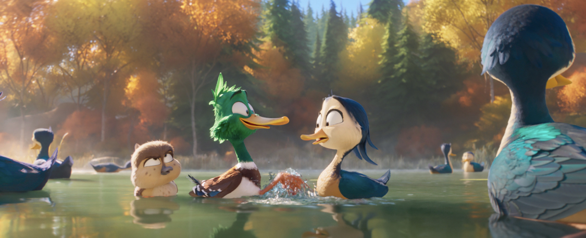4 дні після різдва (2024)
Прем'єра в Україні 28 грудня 2024
Напередодні свят усі хочуть, аби їхні мрії здійснилися. Не виключення і Санта Клаус. В нього, як і в будь-кого із нас є свої найзаповітніші бажання. Він завжди хотів бути супергероєм. А чому ні? Усе своє життя Санта безкорисно допомагає людям. До Різдва лишалися лічені дні, коли дідусь боляче вдарився головою. Та так сильно, що забув хто ж він насправді. Бідолашному примарилося, що він СуперКлаус. У цей же час, один хитрий підприємець вирішив добряче заробити на продажу іграшок. Варто зауважити, що самі іграшки він люто ненавидить і волів би їх знищити. Своїми планами він може зіпсувати усім свято, тож якнайшвидше потрібно рятувати ситуацію. Разом із СуперКлаусом на порятунок світу від катастрофи вирушять 11-річна дівчинка Біллі, яка добре розуміється на техніці та ельф- помічник Лео. Ці троє відчайдухів зроблять усе, аби ніякий жадібний злодюжка не зіпсував людям свято.
Жанри: мультфільм
Країна: Іспанія, Велика Британія